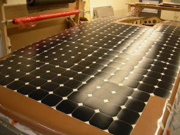
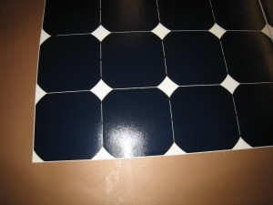
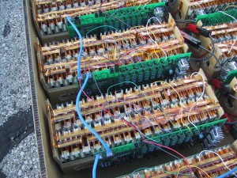
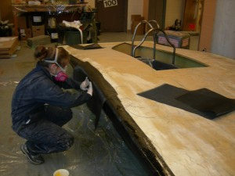
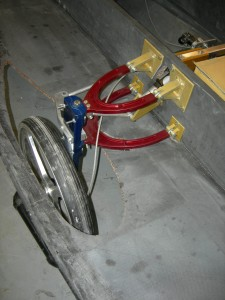
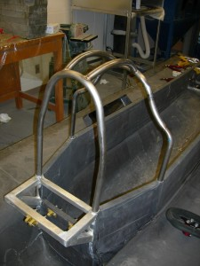
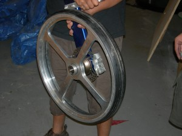

Aurum, our 11th vehicle, was unlike any of our previous designs. We maintained our innovative spirit with a single-person, three-wheeled vehicle that will boast a new aerodynamic design, featured an upright seating position, and had a newly designed carbon-fibre-aluminium hybrid chassis. Mechanical systems were constructed using lightweight aluminium and titanium to minimize mass while maintaining component strength. State-of-the-art, extremely efficient motors allowed the car to cruise all day using minimal energy. The lithium-ion polymer battery pack, which stored up to 5 kWh of energy, weighed only 30 kilograms. The vehicle’s power was obtained by top-of-the-line terrestrial-grade solar cells that are twice as efficient as typical commercial solar cells.
Solar Cells
Type of solar cells utilized: SunPower A-300 Mono-crystalline Silicon
Number of cells in vehicle array: 402
Total array area: 5.973 m2
Open circuit cell voltage: 0.670 V
Short circuit cell current: 5.9 A
Maximum power cell voltage: 0.560 V
Maximum power cell current: 5.54 A
Rated cell power: 3.1 W
Maximum array power: 1246.2 W
Cell Efficiency: Up to 21.5%


Batteries
Type of battery technology utilized: Lithium-Ion Polymer
Total number of cells: 512
Nominal cell voltage: 3.7 V
Cell capacity (20h-rate): 2.9 Ah
Cell weight: 58 g
System layout: 16 cells in parallel per string, 32 strings
Total battery energy: 5.6 kWh
Battery protection system: Custom-designed system monitors string voltage, overall battery current and temperature distribution to prevent overheating and overcharging of the battery

Vehicle Dimensions
Length: 4.98 m
Width: 1.80 m
Height: 1.20 m
Weight: 225 kg
Capacity: 1 person
Body materials
Chassis frame: Carbon-fibre/aluminum hybrid
Body material: Carbon-fibre lower half, Kevlar upper-half, Fibreglass

Mechanical Systems
Front suspension system: Aluminum double A-arm
Rear suspension system: Aluminum trailing arm
Steering system: Rack and pinion with removable steering wheel
Brakes: Hydraulic disc and regenerative braking
Wheels: Custom Machined Aluminum
Tires: Amerityre/Michelin
Roll cage: Custom-formed titanium


